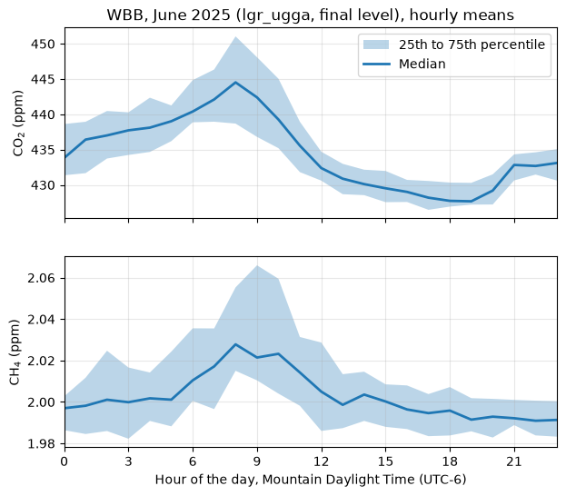

Your first data#
Note
The examples on this page read the UATAQ archive, which is only available on CHPC, and are not run when the documentation is built. The output under each one, and the figure, are from runs on CHPC on 26 October 2026. If the data are reprocessed, the numbers can change a little.
This page takes you from an installed uataq (see Installation) to a month of CO2 and CH4 from one site, in local time, as hourly means, and a plot of their daily cycle. The example is WBB (William Browning, on the University of Utah campus) in June 2025.
To pick another site, pollutant or month, first check that there are data: Find sites and data shows how, and When there is nothing to read says what the errors mean when there are none.
Read a month#
get_obs() takes a site, the pollutants and a time range:
>>> import uataq
>>> obs = uataq.get_obs("WBB", ["CO2", "CH4"], time_range="2025-06")
>>> obs
CO2d_ppm_cal CO2d_ppm_raw CH4d_ppm_cal CH4d_ppm_raw
Time_UTC
2025-06-01 00:00:03 432.407511 435.5981 2.010693 2.010473
2025-06-01 00:00:13 432.561390 435.7535 2.010209 2.009984
2025-06-01 00:00:23 433.129237 436.3271 2.010649 2.010428
2025-06-01 00:00:33 433.462976 436.6642 2.010474 2.010251
2025-06-01 00:00:43 433.639127 436.8421 2.010977 2.010760
... ... ... ... ...
2025-06-30 23:59:13 427.961767 429.8449 1.976710 1.978463
2025-06-30 23:59:23 427.877508 429.7600 1.977210 1.978969
2025-06-30 23:59:33 427.763867 429.6455 1.977274 1.979034
2025-06-30 23:59:42 427.754553 429.6361 1.977592 1.979355
2025-06-30 23:59:52 427.856023 429.7383 1.978085 1.979854
[250687 rows x 4 columns]
It takes about a second. You get one table (a pandas DataFrame) with a row
about every 10 seconds. CO2d_ppm_cal is the calibrated CO2 dry mole fraction
in ppm, CO2d_ppm_raw is the same measurement before calibration, and the
CH4d columns are the same for methane. The column names are explained under
Column names.
The rows are the archive’s final level: the measurements of the outside air
that passed quality control, ready to share. Data levels and flags
says what the other levels hold.
This month is in UTC, not in local time.
Times are UTC#
Every time in uataq is UTC: the times in the data, and the times you pass
in time_range (every form it takes is under Time range). The
index is named Time_UTC to say so, but the time zone is not attached to it
(pandas calls this a naive time):
>>> obs.index.name, obs.index.tz
('Time_UTC', None)
Every uataq site is in Utah (the mobile sites run on trains and buses in the
Salt Lake Valley), and Utah is 6 hours behind UTC in summer (Mountain Daylight
Time, MDT) and 7 hours behind in winter (Mountain Standard Time, MST). Do not
subtract a fixed number of hours. Tell pandas the times are UTC, then convert
them to the America/Denver time zone, which knows when the clocks change and
is the right one for every site:
>>> local = obs.tz_localize("UTC").tz_convert("America/Denver")
>>> local.head(3)
CO2d_ppm_cal CO2d_ppm_raw CH4d_ppm_cal CH4d_ppm_raw
Time_UTC
2025-05-31 18:00:03-06:00 432.407511 435.5981 2.010693 2.010473
2025-05-31 18:00:13-06:00 432.561390 435.7535 2.010209 2.009984
2025-05-31 18:00:23-06:00 433.129237 436.3271 2.010649 2.010428
The same measurements, now labeled in local time; -06:00 is the offset from
UTC. (The index keeps the name Time_UTC. Rename it if that confuses you:
local.index.name = "Time_local".)
A month in local time#
time_range="2025-06" is June in UTC. In local time that is from 18:00 on
31 May to 18:00 on 30 June:
>>> local.index[0], local.index[-1]
(Timestamp('2025-05-31 18:00:03-0600', tz='America/Denver'), Timestamp('2025-06-30 17:59:52-0600', tz='America/Denver'))
So “June” read this way has six hours of 31 May (2,083 rows) and is missing the last six hours of 30 June (2,081 rows), with no warning. A daily mean or a daily cycle for the first and last day comes out wrong.
To get June in local time, read one more day in UTC, convert, and then cut the local month:
>>> obs = uataq.get_obs("WBB", ["CO2", "CH4"], time_range=["2025-06-01", "2025-07-01"])
>>> obs = obs.tz_localize("UTC").tz_convert("America/Denver")
>>> june = obs.loc["2025-06"]
>>> june.index[0], june.index[-1]
(Timestamp('2025-06-01 00:00:03-0600', tz='America/Denver'), Timestamp('2025-06-30 23:59:52-0600', tz='America/Denver'))
>>> len(june)
250685
The read runs to the end of 1 July in UTC (a string end includes the whole day
it names; see Time range), which covers the end of June in Mountain
time. After the conversion, obs.loc["2025-06"] picks the rows in June
local time, because the index now has a time zone. 30 June now has all of
its 8,324 rows. Any month works the same way: start the read on the first day
of the month and end it on the first day of the next.
Hourly means#
pandas averages a table over fixed periods with resample. Convert to local
time first, so that the hours and days are local:
>>> hourly = june.resample("h").mean()
>>> hourly.head(3)
CO2d_ppm_cal CO2d_ppm_raw CH4d_ppm_cal CH4d_ppm_raw
Time_UTC
2025-06-01 00:00:00-06:00 441.390343 444.442363 2.003455 2.003101
2025-06-01 01:00:00-06:00 440.615488 443.567585 1.996306 1.995796
2025-06-01 02:00:00-06:00 435.172711 437.986351 1.995488 1.994749
>>> len(hourly)
720
Each row is the mean of one hour, labeled with the hour’s start: the first row
is 00:00 to 00:59 on 1 June, local time. "D" in place of "h" gives daily
means.
An hour with only a few rows still gets a mean. To see how many rows each mean has, count them the same way:
>>> n = june["CO2d_ppm_cal"].resample("h").count()
>>> n.min()
303
Every hour of this month has at least 303 rows (a full hour has about 360). In
a month with gaps, keep only the hours with enough rows, such as
hourly[n >= 180] for at least half an hour of data.
The daily cycle#
With hourly means in local time, group them by the hour of the day. This
script plots the median of each hour, with the middle half of the values
shaded, for both gases. Save it as daily_cycle.py:
import matplotlib.pyplot as plt
import uataq
# June 2025 in Mountain time: read one extra UTC day, convert, then cut
obs = uataq.get_obs("WBB", ["CO2", "CH4"], time_range=["2025-06-01", "2025-07-01"])
obs = obs.tz_localize("UTC").tz_convert("America/Denver")
june = obs.loc["2025-06"]
# Hourly means, then their 25th, 50th and 75th percentiles for each hour of the day
hourly = june.resample("h").mean()
by_hour = hourly.groupby(hourly.index.hour).quantile([0.25, 0.5, 0.75])
fig, axes = plt.subplots(2, 1, figsize=(7, 6), sharex=True)
for ax, column, label in [
(axes[0], "CO2d_ppm_cal", "CO$_2$ (ppm)"),
(axes[1], "CH4d_ppm_cal", "CH$_4$ (ppm)"),
]:
q = by_hour[column].unstack()
ax.fill_between(q.index, q[0.25], q[0.75], alpha=0.3, label="25th to 75th percentile")
ax.plot(q.index, q[0.5], linewidth=2, label="Median")
ax.set_ylabel(label)
ax.grid(alpha=0.3)
axes[0].legend()
axes[0].set_title("WBB, June 2025 (lgr_ugga, final level), hourly means")
axes[1].set_xticks(range(0, 24, 3))
axes[1].set_xlim(0, 23)
axes[1].set_xlabel("Hour of the day, Mountain Daylight Time (UTC-6)")
fig.savefig("wbb_daily_cycle.png", dpi=100, bbox_inches="tight")
It needs matplotlib (pip install matplotlib). Run it with python
daily_cycle.py. It took 11 seconds and 0.2 GB of memory, which is fine on a
login node; for more data (a year, several sites), run it in a job (see
Use uataq in a Slurm job). It drew:

CO2 and CH4 at WBB in June 2025 by hour of the local day: the median of the hourly means (line) and their 25th to 75th percentiles (shading).#
Both gases are highest around 08:00 local time, and CO2 is lowest in the early evening. Read in UTC, the same peak would show at hour 14, and the plot would be six hours off.
What to write down#
The table does not say where its numbers came from. When you use them, write down:
The instrument.
get_obs()reads every instrument at the site that measures the pollutant. At WBB that is one, thelgr_ugga(a Los Gatos Research analyzer, which measures CO2 and CH4):>>> wbb = uataq.get_site("WBB") >>> [instrument.name for instrument in wbb.pollutant_instruments["CO2"]] ['lgr_ugga']
A site can have more than one instrument for a pollutant, one after another or at the same time; Read data shows how to tell them apart.
The data level:
final, the levelget_obs()always reads.The research group whose archive it came from:
linfor WBB. A read picks the group for you (see Research group).The uataq version:
>>> uataq.__version__ '2026.10.1.dev64+g5e521b7d0'
Yours will differ. A version with
devin it is newer code than the last release. For results you will publish, install a release and note its number (see Installation).
When you publish, cite the papers that describe the measurements (see Citing the data).
Next#
Find sites and data: which sites measure what, and when they have data.
Read data: several sites and pollutants in one table, the other ways to read, and reads of a year or more.
Data levels and flags: what the
finallevel keeps, and the levels below it.